地政学
キングストンは英語圏カリブの首都港で、米国、英国、カリブ共同体、移民送金、海上物流を結ぶ結節点です。小島嶼国家の外交、治安、災害対応、債務管理は、港と官庁の近さから生活へ届く街です。島外の決定も身近です。
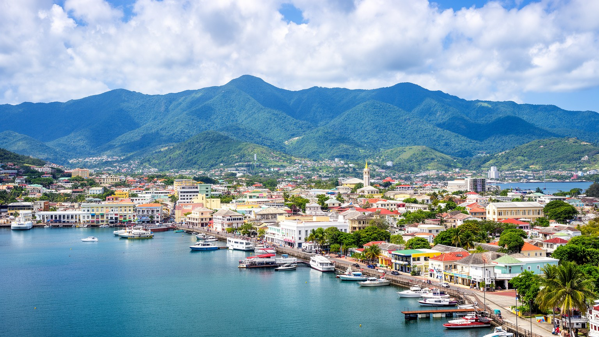
🇯🇲 ジャマイカ / キングストン・セントアンドリュー / World City Atlas
自然港、首都行政、金融、港湾物流、サウンドシステム、レゲエ、山麓住宅、市場、都市再生、災害リスクが、カリブ海の強い光の下で重なるジャマイカの中心都市です。
都市の骨格
キングストンは、天然の大港とブルーマウンテンの山麓に挟まれた首都です。港湾、官庁、金融街、大学、録音スタジオ、露店市場、低地の洪水リスク、丘陵住宅が近距離でぶつかり合います。
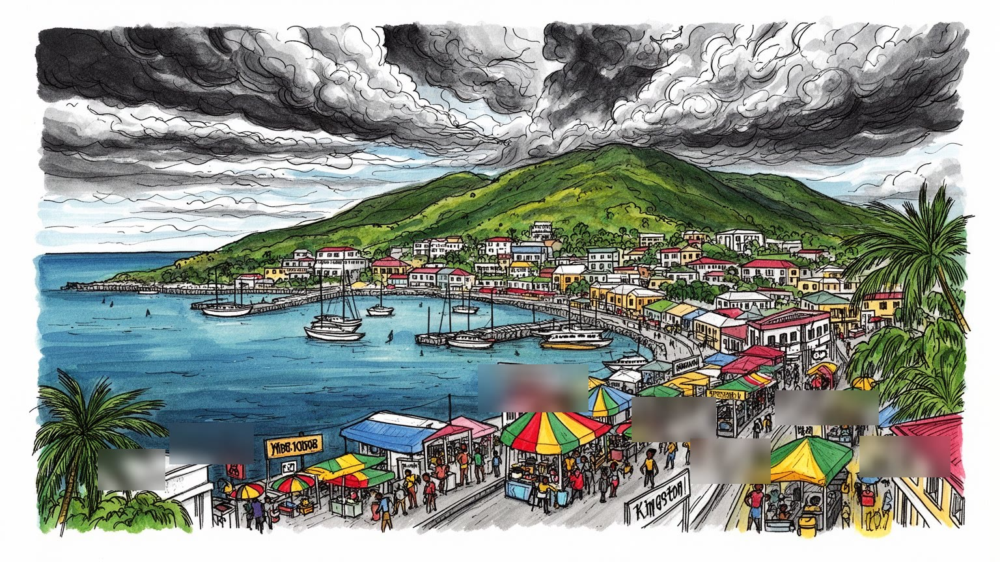
キングストンは英語圏カリブの首都港で、米国、英国、カリブ共同体、移民送金、海上物流を結ぶ結節点です。小島嶼国家の外交、治安、災害対応、債務管理は、港と官庁の近さから生活へ届く街です。島外の決定も身近です。
雇用は行政、港湾、金融、保険、通信、大学、観光、音楽、露店、運輸、修理に広がります。正規雇用の外では家族商い、送金、日雇い、路上販売が家計を支え、物価と治安が働き方を左右します。朝の移動も仕事の一部です。
レゲエ、ダンスホール、教会、ラスタファリ、大学、詩、壁画、サウンドシステムが都市の声を作ります。宗教と音楽は観光商品だけでなく、喪失、抵抗、誇り、日々の倫理を語る生活の言葉でもあります。祈りと低音も結ぶ。
訪問者は博物館やライブ、港の景色へ向かいますが、住民には渋滞、家賃、学校、医療、暴力、洪水、暑さが現実です。旅は歓楽だけでなく、暮らしと不平等を支える街路の仕事も読む必要があります。日常の線も旅程です。
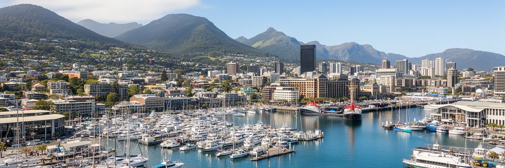
キングストンの都市構造は、カリブ海に開いた大きな自然港から始まります。パリセードの砂州が外海を受け止め、ポートロイヤル、ノーマン・マンリー国際空港、コンテナ港、ダウンタウンのウォーターフロントが、細い地形と水面を介してつながります。港は植民地期の軍事と交易の拠点であり、現在も輸入品、燃料、食料、消費財、クルーズ、海運サービスを都市へ運ぶ入口です。朝にはバスのブレーキ音、港の警笛、揚げ物の匂い、新聞売りの声が水辺に重なり、官庁、裁判所、銀行、保険会社、新聞社、文化施設が政治と経済の判断を作ります。海に向いた都市であることは開放性を与える一方、高潮、ハリケーン、海面上昇、港湾汚染、低地の排水不良という弱さも抱え込みます。山から海へ流れる道路や水路が詰まれば、豪雨はすぐ生活の危険になります。キングストンを読むには、湾の眺めだけでなく、税関、倉庫、修理工、漁業、交通渋滞、屋台、海岸の公共空間を同時に見る必要があります。港は都市を世界へ開く門であり、災害時には都市の脆さが集中する場所でもあります。ウォーターフロントの再生が住民の散歩や商い、子どもの休日、高齢者の涼み場に届く時、港は囲われた施設から共有される都市の前面へ変わります。水辺に人が戻るほど、夜の照明、歩道、警備、清掃、公共トイレ、バスとの接続が重要になります。港湾都市の魅力は、船を眺める余白と働く港の実務が折り合うところに宿ります。
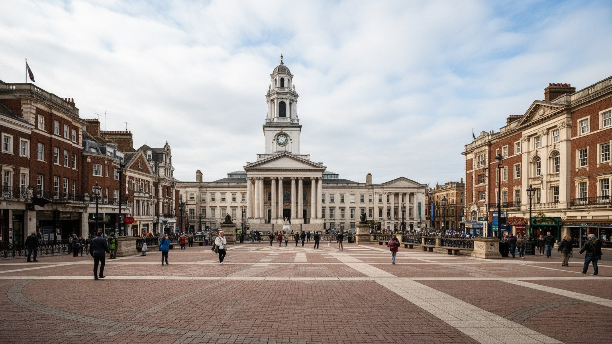
キングストンはジャマイカの首都として、議会、首相府、各省庁、裁判所、中央銀行、外交団、国際機関の窓口を抱えます。ここで扱われる課題は、観光振興や港湾投資だけではありません。債務管理、ハリケーン復旧、食料と燃料の輸入、治安、教育、医療、移民送金、気候変動、カリブ共同体との連携、米国や英国との関係が、首都の会議室と住民の家計を結びます。小島嶼国家では、世界市場の価格変動や航空便の回復、国際金融の条件が日常へ届きやすいです。官庁街の決定は、バス料金、学校給食、病院の待ち時間、警察配置、住宅地の排水工事、港の料金に形を変えます。新聞、ラジオ、テレビ、オンライン番組は政策の言葉を街へ運び、教会、労働組合、大学、露店商の会話が評価を加えます。首都であることは雇用とサービスを集めますが、抗議、政治的動員、監視、交通規制、中心部の地価上昇ももたらします。キングストンの政治を読む時、二大政党の対立や選挙だけに絞ると足りません。路地のコミュニティ組織、スポーツ指導者、音楽家、学校関係者、民間企業が、政策の受け止め方を変えています。島の外から来る資金と圧力を、住民にとって使える制度へ変えられるかが首都の力量を試します。制度の近さは安心であると同時に、期待が裏切られた時の怒りも近くします。災害後の復旧資金、警察改革、公共交通、教室の修繕のような課題では、国家の制度がすぐ地域の信頼に変換されます。首都は島全体の窓口であり、同時に最も厳しく制度の実効性を見られる場所です。
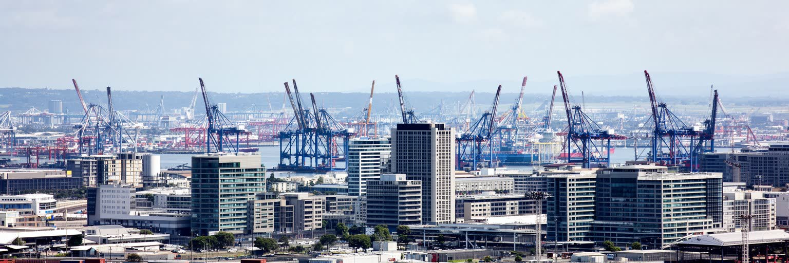
キングストンの経済は、港湾物流、金融、保険、行政サービス、通信、教育、観光、クリエイティブ産業が重なって動きます。コンテナ港はジャマイカの輸入と輸出を受け止め、倉庫、運送、通関、船舶代理、修理、燃料、保険、銀行融資を周囲に生みます。金融街やニューキングストンのオフィスは、国内企業、ホテル、鉱業、農業、建設、送金、公共事業を資金面から支えます。大学や専門学校は会計、看護、物流、メディア創作、情報技術の人材を育て、若者が島内外の仕事へ進む足場になります。港と金融が近いことは、島国経済の速度を上げる一方、世界の運賃、為替、金利、燃料価格の変化を都市へ直接運びます。物流の仕事には専門技能が必要ですが、労働条件は職種によって大きく違います。コンテナヤードの安全、トラック運転手の待機時間、夜間作業、港周辺の渋滞、非正規の荷役や清掃は、表に見えにくい都市労働です。金融と物流の成長が、低所得地区の雇用や交通改善に届かなければ、中心部の再開発は不平等を広げます。キングストンを経済都市として読むには、港で働く身体、銀行の審査、露店の仕入れ、海外送金を待つ家庭をつなげて見る必要があります。中小企業が正式な融資へ届くか、若者が物流や会計の技能を得られるか、港周辺の道路が地域生活を裂かないかも重要です。経済の中枢は高層ビルだけでなく、信用と時間を管理する多くの小さな仕事でできています。
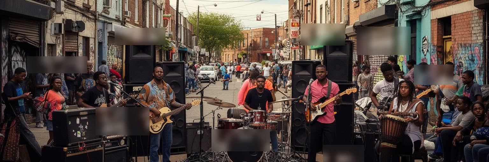
キングストンの名は、レゲエ、ダンスホール、サウンドシステム、録音スタジオ、壁画、ストリートダンスと切り離せません。トレンチタウンやウェストキングストンの歴史、ボブ・マーリーの記憶、ラスタファリの言葉、教会音楽、クラブの低音、ラジオ、屋外の音響文化は、都市の不平等と創造力を同時に語ります。夜になると会場前に屋台の煙、ラムの甘い匂い、タクシーの呼び声が集まり、ダンスホールの新曲は翌朝のラジオ、学校の校庭、スマートフォン動画へ広がります。レゲエ月間、独立記念日の催し、地域のステージは、観光イベントである前に街が自分の声を確認する祭りです。音楽は失業、暴力、警察、移民、恋愛、信仰、政治、誇りを話す社会の言葉です。録音産業は歌手だけでなく、プロデューサー、エンジニア、ダンサー、デザイナー、映像創作者、屋台、タクシー、警備、イベント会場を動かします。成功した曲は世界へ出ますが、地域の若者が安定した収入や安全な練習場所を得られるとは限りません。騒音規制、警察許可、イベント中止、著作権、ジェンダー表現、暴力的な歌詞をめぐる議論も起こります。キングストンの音楽を読むには、機材を運ぶ人、深夜の会場を守る人、学校と仕事の間で踊る若者、亡くなった仲間を歌で悼む共同体を見る必要があります。音楽都市の未来は、世界的な名声を地域の仕事と教育へ戻せるかにかかっています。

キングストンは海沿いの低地からセントアンドリューの山麓へ上がるにつれて、住宅の形、所得、気温、眺め、移動手段が大きく変わります。ニューキングストンや丘陵の住宅地にはオフィス、大学、外交施設、庭付き住宅、ゲート付きの開発が集まり、低地や西側のコミュニティには密集住宅、露店、修理業、歴史的な労働者地区が広がります。地形は単なる景観ではなく、社会の分断を見えやすくします。上へ行くほど涼しく安全に感じられる一方、通勤費、交通渋滞、学校への距離、土砂災害、斜面開発、排水の問題が増えます。低地では洪水、暑熱、老朽住宅、公共空間の不足、暴力の記憶が暮らしを圧迫します。住宅市場が上昇すると、中心に近い古い地区の住民や小商いは再開発の外へ押し出されやすいです。家族の送金で家を直す人、丘へ引っ越したい若者、低地に商売を持つ人、通勤する家事労働者、学校を選ぶ親が、都市の分断を毎日横断しています。路地では子どもが制服のまま店番を手伝い、高齢者が玄関先で涼み、近所の人が薬、送迎、食事を確かめ合います。山麓の眺望と低地の混雑は同じ都市の表裏であり、交通、水、治安、学校の公平性がその距離を縮める鍵になります。斜面の開発許可、低地の排水、借家人の保護、近くの公園や診療所は、都市の分断を和らげる具体策になります。住宅は資産である前に、子どもが安心して眠り、学び、通学でき、高齢者が孤立せず暮らす基盤です。
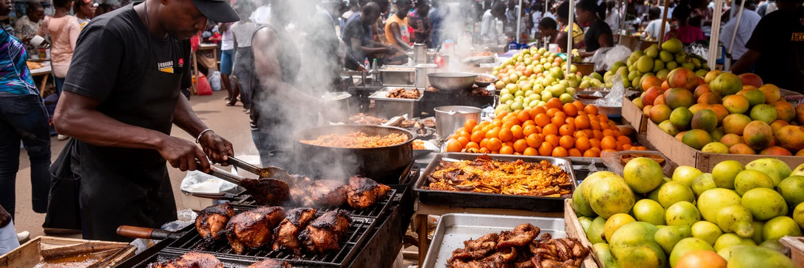
キングストンの市場と食堂は、島の農村、港、都市労働をつなぐ生活の中心です。ダウンタウンの市場には、山地や地方から届く野菜、果物、香辛料、魚、肉、衣類、携帯用品、学用品が集まり、買い出しの声、値段交渉、荷運び、バス待ち、露店の調理が一日のリズムを作ります。焼けるジャークの煙、パティの生地の匂い、熟したマンゴーの甘さ、スープ鍋の湯気は、街路の時間を知らせます。アキーとソルトフィッシュ、米料理、ラム、コーヒーは観光の味である前に、通勤者、学生、港湾労働者、店員、警備員の腹を満たす実用品です。市場の周辺では、靴修理、髪結い、携帯チャージ、古着、果汁売り、ミニバスの客引きが並び、街路経済が小さな現金を循環させます。週末には制服、靴、祝いの服を探す家族も増え、買物は暮らしの準備になります。食の豊かさの背後には、燃料価格、輸入食品、農作物の被害、ハリケーン、通貨、冷蔵設備、保健規制、露店の許可があります。市場で働く人の多くは長時間立ち、暑さや雨、治安、在庫の損失に向き合います。女性の商いと家族労働は特に重要で、仕入れ、調理、販売、子どもの世話が一つの生活に重なります。再開発や衛生改善は必要ですが、露店を追い出すだけでは都市の食の安全網を壊します。市場を歩くことは、輸入依存と地元農業、女性の商い、買物の楽しみ、都市の栄養を一度に読むことです。
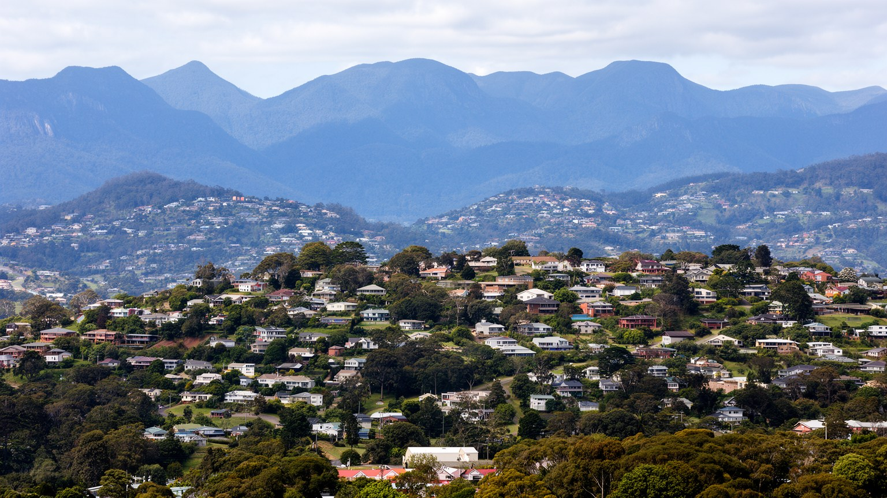
キングストンを語る時、犯罪や暴力の話題は避けて通れませんが、それだけで都市を説明すると住民の生活を見失います。政治的動員、ギャング、麻薬経済、警察との緊張、貧困、失業、住宅密集、学校の中退、家庭の不安が、いくつかの地区で暴力の土壌を作ってきました。ですが同じ路地には、教会、学校、クリケットや陸上の練習、サッカーの小さな試合、音楽スタジオ、女性の商い、近所の見守り、葬儀、壁画、子どもの遊びもあります。ジャマイカの陸上競技への誇りは、校庭や地域クラブで走る子どもにも届き、スポーツは規律、居場所、奨学金の希望になります。危険がある地域ほど、住民は移動時間、通る道、誰と話すか、夜に外へ出るかを細かく判断します。暴力は統計上の事件である前に、通学を遅らせ、店の閉店を早め、救急車やごみ収集を遠ざけ、心の疲れを蓄積させる生活条件です。治安対策が必要でも、強い取締りだけでは信頼を壊すことがあります。雇用、学校、公共空間、メンタルヘルス、住宅改善、若者の表現の場がなければ、暴力の循環は断ちにくいです。キングストンの共同体を読むには、住民がどう安全を作り、悲しみを記憶し、街を使い続けているかを見る必要があります。壁画や音楽は地域の誇りを守る道具であり、亡くなった人の名を忘れないための記憶装置でもあります。共同体の力は、生活を守る選択肢を増やすところにあります。
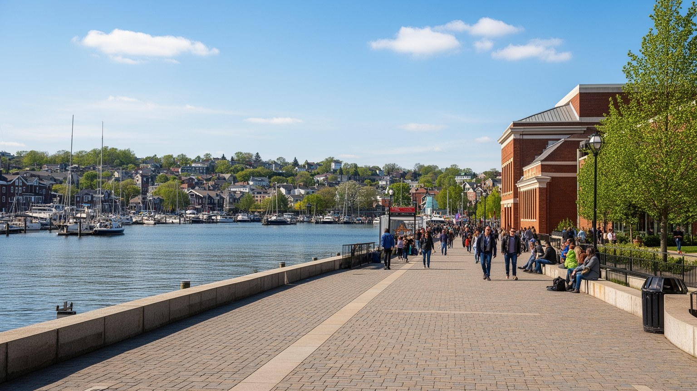
キングストンの観光は、ビーチリゾート型のジャマイカ像とは違います。訪問者はボブ・マーリー博物館、トレンチタウン、ナショナル・ギャラリー、デヴォンハウス、ライブ会場、教会、大学周辺、ブルーマウンテンへの入口、ポートロイヤル、ウォーターフロントを巡り、音楽と都市史を体験します。書店、クラフト店、古着、レコード、香辛料、コーヒーを探す買物も、街の記憶に触れる時間になります。近年はダウンタウンと海岸部の再生が進められ、公共空間、歩行者環境、イベント、観光客の滞在時間を増やす構想が重視されています。レゲエ月間、独立記念日、地域の音楽祭、大学や美術館の催しは、昼の見学と夜の外出を結びます。再生は都市の魅力を高めますが、誰のための中心かという問いを避けて通れません。海辺がきれいになっても、近くの住民が商売を続けられず、家賃が上がり、警備で排除されるなら、都市の記憶は薄くなります。観光客に安全で歩きやすい街を作ることは、住民の通学、通勤、休憩、露店、バス待ちにも役立つ形で設計されるべきです。キングストンの強みは、音楽、食、歴史、山、港、夜の文化が近距離にあることですが、その近さは治安や交通の不安とも隣り合います。観光を都市再生の道具にするなら、現在の創作者や市場の働き手へ利益が届く仕組みが必要です。夜のイベント、路上の案内、地元ガイド、公共交通、手頃な食堂が結びつくと、観光は点ではなく街を歩く経験になります。文化を守るとは、現在の暮らしが中心に居続けられる条件を整えることです。
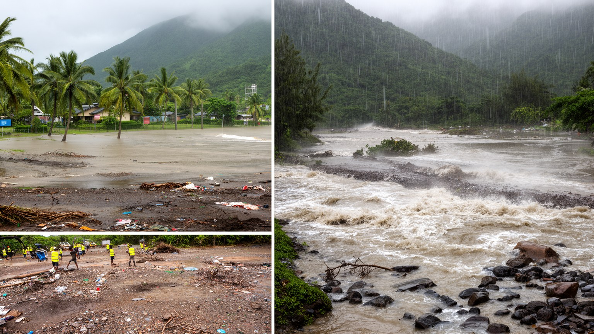
キングストンの気候リスクは、暑さ、豪雨、ハリケーン、高潮、海面上昇、土砂災害、干ばつが複合しています。南岸の低地は比較的乾きやすいですが、雨季の短時間豪雨や大型ハリケーンでは排水路があふれ、道路、住宅、港湾、空港、病院、市場が影響を受けます。山麓の開発は眺望を生む一方、斜面の崩壊や下流の洪水を強める可能性があります。暑熱は屋外で働く露店商、建設労働者、港湾労働者、交通整理、清掃員、高齢者、子どもに重く、午後の教室やバス停、診療所の待合室にも負担を広げます。冷房に頼れる世帯とそうでない世帯の差は、健康と学習にも影響します。水の供給、停電、廃棄物処理、蚊の発生、感染症、災害後の避難所は、気候変動が生活へ届く経路です。防災は堤防や排水工事だけでは足りません。危険地の住宅改善、早期警報、避難路、学校と教会を使った避難計画、港と空港の業務継続、市場の衛生、保険に入れない世帯への支援が必要になります。キングストンは美しい湾と山に守られているように見えますが、同じ地形が水と風を集めます。気候に強い都市とは、観光施設を守るだけでなく、低所得地区の屋根、排水、日陰、飲み水、通学路を守る都市です。暑い日に涼める図書館や教会、冠水時に使える高い道路、停電時の通信、ひとり暮らしの高齢者への声かけも防災の一部です。気候適応は専門家の計画だけでなく、近所が互いに危険を知らせ合う仕組みから始まります。
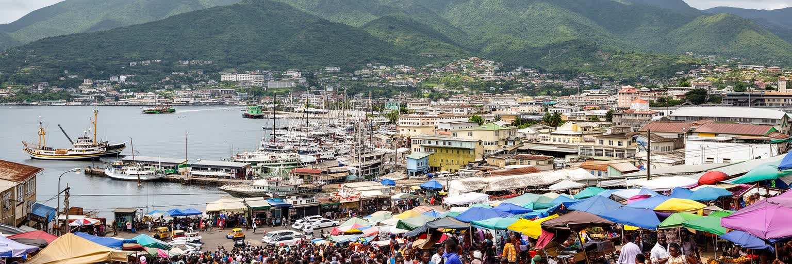
キングストンを理解するには、レゲエの聖地、危険な首都、カリブの港町という単純な像をほどく必要があります。都市は自然港に開かれ、ブルーマウンテンの山麓へ広がり、官庁と銀行、コンテナ港、大学、教会、録音スタジオ、露店市場、低所得地区、丘陵住宅、空港、海岸再生の現場を一つの生活圏に収めています。統計上の経済規模は大きくなくても、音楽と移民ネットワーク、港湾物流、外交、メディア、文化産業を通じて、世界に届く声を持ちます。ですが、その声の足元には、暴力の記憶、住宅の分断、物価高、若者の仕事、洪水、暑熱、公共交通、都市中心部の再開発をめぐる不安があります。訪問者が音楽や博物館を楽しむ時、その魅力を作ってきたのは、路地で機材を運ぶ人、市場で食材を売る人、港で夜勤する人、学校へ通う子ども、陸上やクリケットに励む若者、教会で支え合う家族、店先で近所を見守る高齢者です。港を見れば輸入と気候リスクが見え、音楽を聴けば抵抗と商業が見え、山を上れば分断と眺望が見え、夜市やバス停に立てば油の匂い、低音、暑さ、値段交渉の声が生活を説明します。これらを同時に読む時、キングストンは単なる首都ではなく、カリブ海の都市問題と創造力が凝縮された場所として立ち上がります。外からの名声と内側の課題を分けずに見ることで、都市の力は観光の印象ではなく、人が働き、祈り、歌い、学び、暮らしを守る関係の厚みとして理解できます。